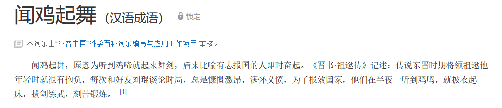

3月
git 仅拉取最新代码的方法： git clone --depth=1 仓库地址 ，可有效节约下载时间与磁盘占用
nginx 重定向静态资源文件到其他地方, 例如我的博客将下列类型的文件重定向到了我在阿里云 oss 所存放的地方，这样将博客服务器的这部分上行压力转移给了 oss
nginx
location ~ .*\.(gif|jpg|jpeg|png|mp4|mp3|aac)$ {
rewrite /(.*) https://store-llej.oss-cn-hangzhou.aliyuncs.com/doc/$1;
}
今天终于让这个可以使用了 web font serverless 版 在线尝试地址
可用于优化 web 体验的 无损压缩算法 Brotli
今天博客来了一个 云浮 的访问者，我很喜欢在其他网站将所在地址填成云浮，今天居然碰到了真的🤣
全历史
： 一个非常好的历史类应用
Link to Text Fragment
: 一个跳转到任意网页对应文本处的解决方案
突然想到了「闻鸡起舞」这个成语，但鸡是过一段时间叫一阵一直叫到白天的，所以祖逖他们晚上不睡觉的吗？


Function.caller 有一定可行性，但生产中不行，因为基本都会开启严格模式